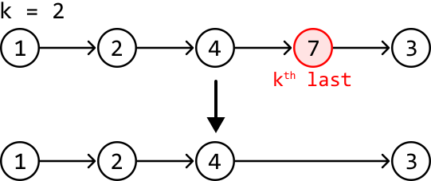

Remove the Kth Last Node From a Linked List
MediumReturn the head of a singly linked list after removing the kth node from the end of it.
Example:

th to last element. The top row shows a linked list with nodes containing the values 1, 2, 4, 7, and 3, connected by unidirectional arrows indicating the next element in the sequence. A value 'k = 2' is displayed above, indicating that we are searching for the second to last element. The node containing '7' is highlighted in red and labeled 'kth last,' signifying its position as the second to last element in the list. A downward arrow points from the '4' node in the top row to the '4' node in the bottom row. The bottom row shows the same linked list after the removal of the last element (3). The structure of the bottom row is identical to the top row except for the absence of the last node, demonstrating the process of iterating through the list to find the kth to last element."/>Constraints:
- The linked list contains at least one node.
Intuition
We can divide this problem into two objectives:
- Find the position of the kth last node.
- Remove this node.
Let’s first understand how node removal works. Consider the example below, where we need to remove node b. To do this, we need access to the node preceding it (node a), so we can redirect the pointer of node a to skip over node b. This ensures node b is no longer reachable through linked list traversal:
![Image represents a linked list data structure illustrating the removal of a node. A rectangular box labeled 'prev' points downwards with an arrow to a circular node labeled 'a'. Node 'a' connects via a rightward arrow to a highlighted, red-bordered circular node labeled 'b', which is further connected via a rightward arrow to a circular node labeled 'c'. A red curved arrow points from the text 'node to remove' (in red) to node 'b', indicating the node to be deleted. To the right, a dashed-line rectangle contains the code snippet 'prev.next = prev.next.next', representing the algorithm to remove node 'b'. This code updates the 'next' pointer of the preceding node ('prev') to skip the node being removed ('b') and point directly to the following node ('c'), effectively removing 'b' from the list.](images/03_02_remove-the-kth-last-node-from-a-linked-list-img-a6dfb82f.svg)
![Image represents a state diagram illustrating a coding pattern, possibly related to state transitions or workflow. A rectangular box labeled 'prev' points downwards with an arrow to a circle labeled 'a,' representing an initial state. A curved arrow connects circle 'a' to circle 'c,' indicating a direct transition from state 'a' to state 'c.' A large red 'X' is overlaid on a light-red circle positioned between 'a' and 'c,' visually signifying that a direct transition between 'a' and 'c' is invalid or prohibited. A light-grey arrow points from the red 'X' to circle 'c,' suggesting an alternative, possibly indirect, path to reach state 'c' from 'a' that is not explicitly shown in the diagram but is implied to exist due to the grey arrow.](images/03_02_remove-the-kth-last-node-from-a-linked-list-img-2608f00e.svg)
This indicates we need to find the node directly before the kth last node in order to remove it.
A naive solution to this problem is to first obtain the length of the linked list (n) by traversing it. Then, use this length to determine the number of steps required to arrive at the node before the kth last node, which is just n - k - 1 steps. This solution involves two for-loops, but is there a cleaner way to approach this problem?
The challenge with navigating a singly linked list in a single for-loop is that as we traverse, it’s hard to tell how far we are from the final node. The only way we’d know this is when we reach the final node itself, since its next node is null. How can we make use of this information?
Consider using two pointers instead of one. Could we create a scenario where, by the time one pointer reaches the end of the linked list, another pointer is positioned before the kth last node? Let’s explore this logic using the following example:
![Image represents a directed graph illustrating a sequence of nodes connected by unidirectional arrows. The nodes are represented by circles containing numerical values: 1, 2, 4, 7, and 3. The node labeled '1' is designated as 'head'. Arrows indicate the flow of information from one node to the next, starting from node 1 and proceeding sequentially to node 2, then node 4, then node 7, and finally node 3. The graph is accompanied by the text ', k = 2', suggesting a parameter 'k' with a value of 2, likely relevant to the algorithm or process depicted by the graph's structure. The overall structure suggests a linear progression or a simple linked list data structure, possibly demonstrating a specific coding pattern or algorithm step.](images/03_02_remove-the-kth-last-node-from-a-linked-list-img-46f56b0d.svg)
We denote the first pointer as leader and the pointer that follows it as trailer. When the leader pointer reaches the last node of the linked list, we want the trailer pointer to end up at node 4 (the node right before the kth last node) to prepare for deletion. In other words, the leader should be k nodes in front of the trailer when the leader reaches the last node.
![Image represents a linked list data structure illustrating a sliding window pattern with a window size (k) of 2. The list consists of nodes numbered 1 through 7, with node 1 labeled 'head,' indicating the beginning of the list. Nodes are connected by unidirectional arrows showing the sequence. A light gray shaded node 7 is present. A blue box labeled 'trailer' points down to node 4, and an orange box labeled 'leader' points down to node 3. A gray line segment underlines nodes 4 and 7, with 'k = 2' written below it, indicating the window size. The arrows and node arrangement visually depict the movement of a window of size 2 across the linked list, where the 'trailer' marks the window's start and the 'leader' marks its end. The window's position is dynamically updated as the leader advances through the list.](images/03_02_remove-the-kth-last-node-from-a-linked-list-img-bc8afe23.svg)
To achieve this, we can start by advancing the leader pointer through the linked list for k steps. When the leader pointer is k nodes ahead of the trailer, we can advance both pointers together until the leader reaches the last node. This process will be explained in more detail soon.
However, there’s an important edge case to consider first: what if the head itself is the node we need to remove? In this case, there’s no node before the head, so we cannot perform the removal, as mentioned earlier. To circumvent this, we can create a dummy node, place it before the head node, and start our traversal from there.
![Image represents a linked list data structure illustrating a coding pattern. Two rectangular boxes labeled 'trailer' and 'leader' point downwards with arrows to a light gray circle labeled 'D,' representing a detached node. A dark gray arrow extends from 'D' to a dark circle labeled '1' and marked 'head,' indicating the beginning of the main list. This 'head' node (1) is connected via dark arrows to subsequent nodes labeled '2,' '4,' '7,' and finally '3.' The arrows show the unidirectional flow of information or traversal through the list, starting from the head (1) and progressing sequentially to the tail (3). The overall structure depicts a singly linked list with a detached node, highlighting how nodes can be added or removed from the list.](images/03_02_remove-the-kth-last-node-from-a-linked-list-img-b6308413.svg)
Let’s now try incorporating our strategy into the example.
First, advance the leader pointer k (2) times so it’s k nodes ahead of the trailer pointer:
![Image represents a linked list data structure illustrating a coding pattern. A gray, circular node labeled 'D' represents the trailer, connected by a solid arrow to a black, circular node labeled '1', which is labeled 'head' below it. Node '1' is connected to node '2' by a solid arrow. Node '2' is connected to node '4' by a solid arrow. Node '4' is connected to node '7' by a solid arrow. Finally, node '7' is connected to node '3' by a solid arrow. A rectangular box labeled 'leader' in orange is positioned above node '2', with a solid arrow pointing down to it, indicating a pointer to this node. Dashed orange arrows connect the 'trailer' node to node '1' and node '1' to node '2', showing additional pointers or connections. A gray line segment below the nodes 'D' and '2' is labeled 'k = 2', indicating a distance or window size of 2 between the trailer and the leader. The overall structure depicts a linked list with a trailer, head, and a leader pointer positioned k nodes ahead of the head.](images/03_02_remove-the-kth-last-node-from-a-linked-list-img-aaefbb9f.svg)
With the leader k nodes ahead, we can move both the trailer and leader pointers until the leader reaches the last node:
![Image represents a linked list data structure illustrating the 'Leader-Follower' coding pattern. The list is composed of circular nodes numbered 1 through 7, and a detached node 'D'. Solid arrows indicate the primary forward links within the list, progressing from node 1 to 2, 2 to 4, 4 to 7, and finally 7 to 3. Node 1 is labeled 'head', signifying the starting point of the list's traversal. A light gray node 'D' is connected to node 1 via a solid gray arrow, representing a data element added to the list. A rectangular box labeled 'trailer' in light blue is connected to node 1 via a dashed light blue arrow, indicating a pointer to the tail of the list. Separately, a rectangular box labeled 'leader' in orange is connected to node 4 via a dashed orange arrow, highlighting a separate pointer that points to a specific node within the list, demonstrating the 'leader' aspect of the pattern. The arrangement shows how both a head and a leader pointer can be used to efficiently manage and access elements within the linked list.](images/03_02_remove-the-kth-last-node-from-a-linked-list-img-2771f01c.svg)
![Image represents a linked list data structure illustrating the Leader-Follower pattern. A gray circle labeled 'D' represents the data source, connected via a solid gray arrow to a black circle labeled '1' and marked 'head'. Black circles numbered '1', '2', '4', '7', and '3' sequentially connect via solid black arrows, representing the nodes of the linked list. A light-blue rectangle labeled 'trailer' is positioned above node '2', connected to it by a dashed light-blue arrow, indicating a pointer to the trailer node. Similarly, an orange rectangle labeled 'leader' is positioned above node '7', connected to it by a dashed orange arrow, showing a pointer to the leader node. The dashed arrows represent pointers that are not part of the main linked list structure but point to specific nodes for tracking purposes within the Leader-Follower pattern. The overall structure shows the flow of data from 'D' through the linked list, with the 'trailer' and 'leader' pointers tracking specific nodes within the list.](images/03_02_remove-the-kth-last-node-from-a-linked-list-img-6754a827.svg)
![Image represents a linked list data structure illustrating the concept of pointers and multiple linked lists. A primary linked list is shown with nodes numbered 1 through 7, connected sequentially by solid black arrows. Node 1 is labeled 'head,' indicating the beginning of the list. A grey circle labeled 'D' precedes node 1, suggesting a detached or disconnected element. A light-blue rectangle labeled 'trailer' points to node 4 via a solid light-blue arrow, indicating a secondary pointer to a specific node within the main list. Separately, an orange rectangle labeled 'leader' points to node 3 via a solid orange arrow, representing another independent pointer to a different node in the main list. Dashed light-blue arrows connect node 2 to node 4, and dashed orange arrows connect node 7 to node 3, illustrating additional, non-sequential connections or pointers within the list, possibly representing alternative traversal paths or additional data structures linked to the main list.](images/03_02_remove-the-kth-last-node-from-a-linked-list-img-19f52e65.svg)
With the trailer pointer at the ideal position, we can remove node 7:
![Image represents a linked list data structure undergoing an insertion operation. A singly linked list is depicted with nodes numbered 1 through 4, initially connected sequentially. Node 1 is labeled 'head,' indicating the beginning of the list. A grey node labeled 'D' precedes node 1, representing a dummy node. A new node containing the value 7 is highlighted in red, indicating its insertion point. A light-blue box labeled 'trailer' points to node 4, representing a pointer to the node before the insertion point. A grey box labeled 'leader' points to node 3, representing a pointer to the node after the insertion point. Arrows indicate the direction of the links between nodes. A dashed grey box contains the code snippet 'trailer.next = trailer.next.next,' illustrating the algorithm for inserting node 7: the 'next' pointer of the node before the insertion point (trailer) is updated to point to the node after the insertion point (trailer.next.next), effectively inserting the new node 7 into the list.](images/03_02_remove-the-kth-last-node-from-a-linked-list-img-9c298c41.svg)
![Image represents a diagram illustrating a coding pattern, possibly related to linked lists or data structures. The diagram shows a sequence of numbered circles (1, 2, 4, 3) representing nodes, connected by arrows indicating a directional flow. A grey circle labeled 'D' precedes node 1, with a grey arrow pointing to it, suggesting an initial data source. Node 1 is labeled 'head', indicating the beginning of the sequence. A light blue rectangle labeled 'trailer' points to node 4, suggesting a pointer to the end of the sequence. A black arrow connects node 4 to node 3, bypassing a crossed-out circle, indicating a skipped or removed element. A separate black rectangle labeled 'leader' points to node 3, suggesting an alternative or overriding pointer to a specific node. The overall structure depicts a linked list with a head, a trailer, and a potential modification or re-ordering of elements, possibly through a 'leader' pointer bypassing a deleted node.](images/03_02_remove-the-kth-last-node-from-a-linked-list-img-17938c5d.svg)
After this removal, we just return dummy.next, which points at the head of the modified linked list.
[Interactive code editor — visit bytebytego.com to run]
Implementation
from ds import ListNode
def remove_kth_last_node(head: ListNode, k: int) -> ListNode:
# A dummy node to ensure there's a node before 'head' in case we need to remove
# the head node.
dummy = ListNode(-1)
dummy.next = head
trailer = leader = dummy
# Advance 'leader' k steps ahead.
for _ in range(k):
leader = leader.next
# If k is larger than the length of the linked list, no node needs to be
# removed.
if not leader:
return head
# Move 'leader' to the end of the linked list, keeping 'trailer' k nodes behind.
while leader.next:
leader = leader.next
trailer = trailer.next
# Remove the kth node from the end.
trailer.next = trailer.next.next
return dummy.next
import { ListNode } from './ds.js'
export function remove_kth_last_node(head, k) {
// A dummy node to ensure there's a node before 'head' in case we need to remove
// the head node.
const dummy = new ListNode(-1)
dummy.next = head
let trailer = dummy
let leader = dummy
// Advance 'leader' k steps ahead.
for (let i = 0; i < k; i++) {
leader = leader.next
// If k is larger than the length of the linked list, no node needs to be
// removed.
if (!leader) {
return head
}
}
// Move 'leader' to the end of the linked list, keeping 'trailer' k nodes behind.
while (leader.next) {
leader = leader.next
trailer = trailer.next
}
// Remove the kth node from the end.
trailer.next = trailer.next.next
return dummy.next
}
import core.LinkedList.ListNode;
public class Main {
public ListNode remove_kth_last_node(ListNode head, int k) {
// A dummy node to ensure there's a node before 'head' in case we need to remove
// the head node.
ListNode dummy = new ListNode<>(-1);
dummy.next = head;
ListNode trailer = dummy;
ListNode leader = dummy;
// Advance 'leader' k steps ahead.
for (int i = 0; i < k; i++) {
leader = leader.next;
// If k is larger than the length of the linked list, no node needs to be
// removed.
if (leader == null) {
return head;
}
}
// Move 'leader' to the end of the linked list, keeping 'trailer' k nodes behind.
while (leader.next != null) {
leader = leader.next;
trailer = trailer.next;
}
// Remove the kth node from the end.
trailer.next = trailer.next.next;
return dummy.next;
}
}
Complexity Analysis
Time complexity: The time complexity of remove_kth_last_node is O(n). This is because the algorithm first traverses at most n nodes of the linked list, and then two pointers traverse the linked list at most once each.
Space complexity: The space complexity is O(1).